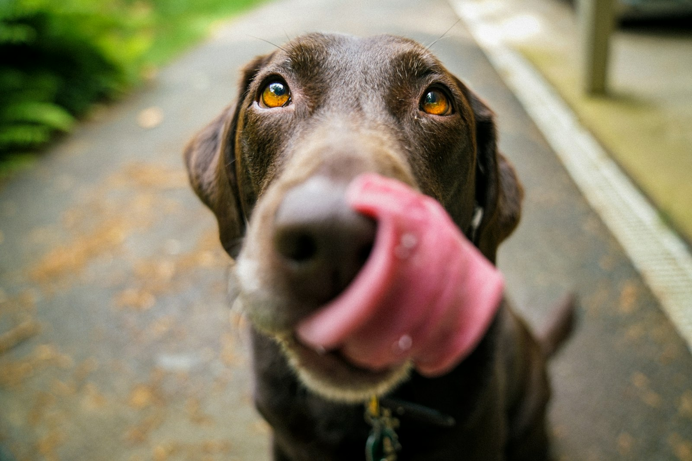

Bryan pet groomer
Dog and cat grooming on Wilde Oak Circle.
A pet grooming service at 1806 Wilde Oak Circle in Bryan. Call (979) 821-2001.
4.6 stars from 76 Google reviews
For Barker Street Pet Grooming: online today vs. this site
What we found when we looked Barker Street Pet Grooming up, next to what this website gives you.
| Side by side | Listings onlyListings | With this website+ Website |
|---|---|---|
| Your own web address | ✕ | ✓ |
| Your own site in Google results | ✕ | ✓ |
| Services, hours and directions on one page | Spread out | ✓ |
Your listings still help people find you. A website gives them somewhere to land.
Barker Street Pet Grooming is at 1806 Wilde Oak Cir in Bryan. Public reviews mention dog and cat grooming, nail trims, and staff named Ciara and Mary Joe. Google lists a 4.6 rating from 76 reviews. The most recent reviews found here are from 2023, so this preview does not treat that as a 2024–2026 review history.
Hours were not listed on the Google/Exa listing used for this preview. Other public directories list 8 a.m.–4 p.m. Tuesday through Saturday, with Monday and Sunday closed; those hours may be out of date, so it is best to call or check ahead. No owned website was found; groomer.io is a booking page, not an owned domain. A public Facebook page was not found on the listing used here. The shop uses a phone number and a physical address.

4.6 stars from 76 Google reviews. Quotes below are from public reviews and are not testimonials created for this demo.
“I absolutely love this place! They got me scheduled quickly and did such a great job! I didn't get a picture of when my puppers first got the cut, but he still looks amazing after 2 weeks! And I love the business name! Update 3 years later: never had one issue with this place, they are the absolute best!”
“Ciara and Mary Joe did an excellent job and took great care of my chi mutts! One is a senior gal and the other has a lot of anxiety, they took excellent care of them”
“Finally, finally, finally!!! My baby, Banjo, is NOT a fan of the groomers. Barker Street has came to our rescue. He is going in for his 3rd time this week, medicine free!! I am beyond thankful they have been so great and patient with him!”
“I brought my cat Nora here for the first time today. Everyone I spoke with was very kind and professional and answered all of my questions. Nora looked so great when I picked her up”
Hours were not listed on the Google listing used for this preview. Other public directories list 8 a.m.–4 p.m. Tuesday through Saturday, with Monday and Sunday closed. Those hours may be out of date, so it is best to call or check ahead.